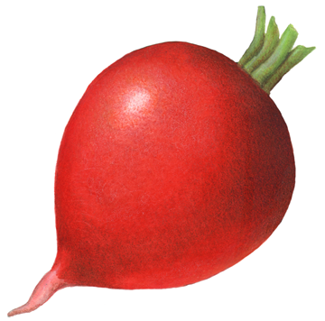

Vegetables
Elements with wrappers
свекла свекла свекла свекла свекла свекла свекла свекла свекла свекла свекла свекла свекла свекла свекла
брокколи брокколи брокколи брокколи брокколи брокколи брокколи брокколи брокколи брокколи брокколи брокколи брокколи брокколи брокколи брокколи брокколи брокколи брокколи брокколи брокколи брокколи брокколи брокколи брокколи брокколи брокколи брокколи брокколи брокколи брокколи брокколи брокколи брокколи
морковь морковь морковь морковь морковь морковь морковь морковь морковь морковь морковь морковь морковь морковь морковь морковь морковь морковь морковь морковь морковь морковь морковь морковь морковь морковь морковь морковь морковь морковь морковь морковь морковь морковь морковь морковь морковь морковь
баклажан баклажан баклажан баклажан баклажан баклажан баклажан баклажан баклажан баклажан баклажан баклажан баклажан баклажан баклажан баклажан баклажан баклажан баклажан баклажан баклажан баклажан баклажан баклажан баклажан баклажан баклажан баклажан баклажан баклажан баклажан баклажан баклажан баклажан баклажан баклажан баклажан
капуста капуста капуста капуста капуста капуста капуста капуста капуста капуста капуста капуста капуста капуста капуста капуста капуста капуста капуста капуста капуста капуста капуста капуста капуста капуста капуста капуста капуста
чеснок чеснок чеснок чеснок чеснок чеснок чеснок чеснок чеснок чеснок чеснок чеснок чеснок чеснок чеснок чеснок чеснок чеснок чеснок чеснок чеснок чеснок чеснок чеснок чеснок чеснок чеснок чеснок чеснок чеснок чеснок чеснок чеснок чеснок чеснок чеснок чеснок чеснок
бобы бобы бобы бобы бобы бобы бобы бобы бобы бобы бобы бобы бобы бобы бобы бобы бобы бобы бобы бобы бобы бобы бобы бобы бобы бобы бобы бобы бобы бобы бобы бобы бобы бобы бобы бобы бобы бобы бобы
зеленый перец зеленый перец зеленый перец зеленый перец зеленый перец зеленый перец зеленый перец зеленый перец зеленый перец зеленый перец зеленый перец зеленый перец зеленый перец зеленый перец зеленый перец зеленый перец зеленый перец зеленый перец зеленый перец зеленый перец зеленый перец зеленый перец зеленый перец зеленый перец зеленый перец зеленый перец зеленый перец зеленый перец зеленый перец зеленый перец зеленый перец зеленый перец
кабачок кабачок кабачок кабачок кабачок кабачок кабачок кабачок кабачок кабачок кабачок кабачок кабачок кабачок кабачок кабачок кабачок кабачок кабачок кабачок кабачок кабачок кабачок кабачок кабачок кабачок кабачок кабачок кабачок кабачок кабачок кабачок кабачок кабачок кабачок кабачок кабачок кабачок кабачок
лук лук лук лук лук лук лук лук лук лук лук лук лук лук лук лук лук лук лук лук лук лук лук лук лук лук лук лук лук лук лук лук лук лук лук лук лук лук лук
перец перец перец перец перец перец перец перец перец перец перец перец перец перец перец перец перец перец перец перец перец перец перец перец перец перец перец перец перец перец перец перец перец перец перец перец перец перец перец перец перец перец перец перец перец перец перец
горох горох горох горох горох горох горох горох горох горох горох горох горох горох горох горох горох горох горох горох горох горох горох горох горох горох горох горох горох горох горох горох горох горох горох горох горох горох
картофель картофель картофель картофель картофель картофель картофель картофель картофель картофель картофель картофель картофель картофель картофель картофель картофель картофель картофель картофель картофель картофель картофель картофель картофель картофель картофель картофель картофель картофель картофель картофель картофель картофель картофель картофель картофель картофель картофель картофель картофель картофель картофель картофель картофель картофель картофель картофель
тыква тыква тыква тыква тыква тыква тыква тыква тыква тыква тыква тыква тыква тыква тыква тыква тыква тыква тыква тыква тыква тыква тыква тыква тыква тыква тыква тыква тыква тыква тыква тыква тыква тыква тыква тыква тыква

редиска редиска редиска редиска редиска редиска редиска редиска редиска редиска редиска редиска редиска редиска редиска редиска редиска редиска редиска редиска редиска редиска редиска редиска редиска редиска редиска редиска редиска редиска редиска редиска редиска редиска редиска редиска редиска редиска редиска
томат томат томат томат томат томат томат томат томат томат томат томат томат томат томат томат томат томат томат томат томат томат
Modal windows
X
X
X
X
X
X
X
X
X
X
X
X
X
X
X
X